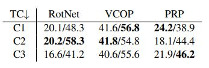
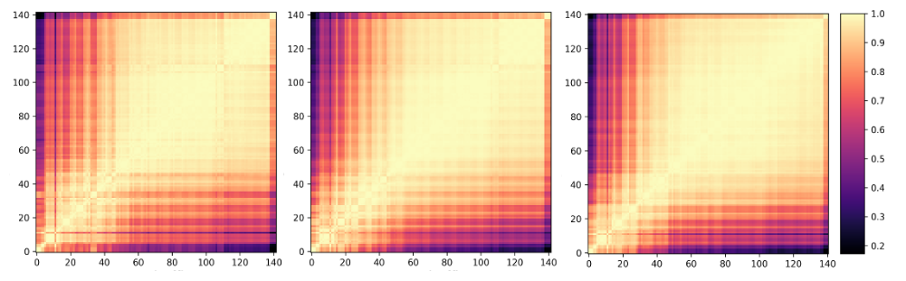
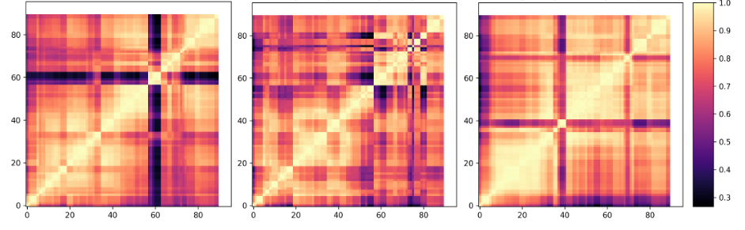
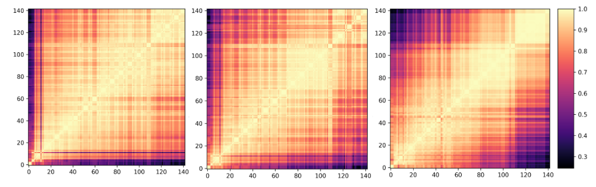
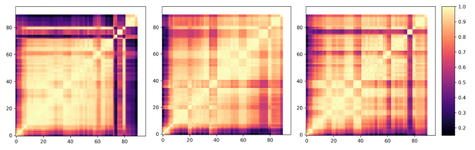

We study the effect of task complexity and we observe that at a certain point a task can become unsolvable or
trivial. In this aspect, we analyze only non-contrastive tasks
as it is non-trivial to define task complexity for contrastive
based approaches. We look into three different complexities (C1, C2, C3 (Table 1)) for each task.
The variation in
complexity for each task is discussed as follows:
-
VCOP:
We increase the number of clips from 3 to 5. With these
variations, the number of permutations increase from 6 to
120 which increases the memory as well as compute cost
for VCOP. We reduce the batch-size by a factor of 2 as we
go from 3-5 to limit the memory consumption.
- RotNet:
We fluctuate the number of times clips are rotated along the
spatial axis for three cases: 2, 3 and 4 rotations. The videos
are rotated in multiple of 90 degrees.
- PRP: We investigate
different sampling rates for this pretext task. The dilation
sampling rates are 1, 2, 4 and 8. Depending upon the types
of sample steps in the list, we have a class label assigned to
each sample step. The sample rate of clip is classified ranging from 2 classes for {1, 2} to 4 classes which includes all
sampling rates {1, 2, 4, 8}.

Table 1: Complexity Variation:TC: Task complexity. Results are shown on UCF101 with ShuffleNet/R21D backbone.
From Table 1, we see increasing the number of rotations in RotNet from three to four
makes the task too complex for the network and there’s a
sharp decrease in performance (more than 10% in case of
R21D). In case of VCOP, we see that 3 clips permutation
leads to better solution than other settings by a margin 2-
3%. For PRP, small capacity networks are unable to generalize well with increase in complexity as compared to bigger capacity network.

Figure 1: CKA maps for layer representations: Complexity 2,3,4 for RotNet pretext, Network: ShuffleNet (Left to right).

Figure 2: CKA maps for layer representations: Complexity 2,3,4 for RotNet pretext, Network: R21D (Left to right).

Figure 3: CKA maps for layer representations: Complexity 2,3,4 for PRP pretext, Network: ShuffleNet (Left to right).

Figure 4: CKA maps for layer representations: Complexity 2,3,4 for PRP pretext, Network: R21D (Left to right).
In case of RotNet, both networks show staggering grids for complexity with 3 rotations. As we increase the complexity, multi-block pattern
gets more prominent which indicates the saturation in performance. For PRP, ShuffleNet has an overall lower performance in comparison to R21D, and, hence we see a multi-block patterns for different complexities, giving the darkest
pattern when increased from 3 to 4. On the other hand,
R21D depicts staggering grids for both these complexities
Inferences
We derive the following two conclusions from
this experiment:
- training with a more complex problem doesn't always lead to optimal solutions.
- CKA maps
show that increasing complexity of the problem is indicative of saturation in performance as block structures begin
to emerge.